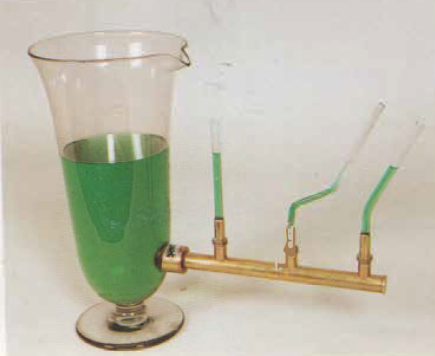

Vasi comunicanti
Scuola di provenienza: Liceo statale "P.E. Imbriani", Avellino
Settore: Meccanica
Costruttori: Sconosciuto
Materiali: Vetro e ottone
Accessori: Nessuno
Stato di conservazione: Buono, il tubo centrale rotto
Descrizione: Si abbiano vari recipienti di qualsiasi forma e dimensione, inclinati o dritti, comunicanti tra loro. Versando un liquido in uno di questi recipienti, si vede che esso raggiunge in tutti la stessa altezza così che le varie superfici libere si trovino su di uno stesso piano orizzontale. È questa una conseguenza delle pressioni nei liquidi dovuta alla forza di gravità.